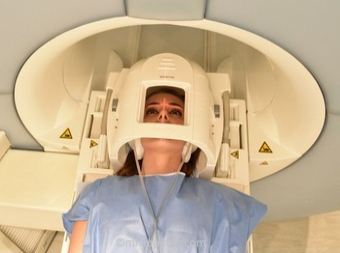

Para el estudio del Cráneo necesitamos una antena específica de Cráneo. Dependiendo de la marca del equipo, serán de una forma u otra, es decir, unas en las que sólo podemos estudiar el cráneo y otras en las que además podemos estudiar el cuello, aunque en la actualidad las resonancias de Última Generación tienen éste tipo de antenas porque incorporan más canales y por lo tanto mejor calidad de la imagen y además la opción de poder hacer estudios Vasculares de los Troncos SupraAórticos de muy buena calidad.

Colocación del paciente:
Decúbito supino con los brazos a lo largo del cuerpo. Le pondremos debajo de las rodillas una almohadilla para su comodidad. Además es muy importante que la cabeza la tenga muy bien colocada en el interior de la Antena, aunque nos encontraremos casos en los que el paciente tiene el cuello un poco más corto , pues un truco bastante bueno es colocar la almohadilla de las rodillas un poco más hacia los muslos ( truco muy bueno también si tienen Cifosis Cervical) ,y así la cabeza sube un poco hacia el interior de la Antena.
Y por supuesto, vamos a dar por hecho que el paciente no tiene la cabeza ladeada, si así fuera, colocamos almohadillas en los laterales para evitar esa rotación.
Línea de Centraje:
Línea Orbitomeatal, es decir, la línea que une la órbita con el meato acústico externo.
Estamos viendo como el paciente tiene colocada la cabeza en el interior de la Antena y la línea de Centraje (línea continúa roja) en el punto de referencia que es la línea orbitomeatal. Es muy importante que la cabeza la tenga en el lugar correcto,es decir, todos sabemos que nuestro equipo tiene la mayor Intensidad en el Isocentro del Imán, si yo no colocara al paciente en el Isocentro, obtendría mucho ruido. Las Antenas, ya sean de un equipo de Alto Campo o de Bajo Campo, tienen su mayor intensidad en un punto concreto. Vamos a poner otro ejemplo por si acaso no me estoy explicando bien… Tenemos la Antena Neurovascular, vamos a suponer que tiene 4 canales y los hemos marcado con las líneas rojas y además vamos a abrir la antena.
La manera correcta de colocar al paciente es con la cabeza bien colocada dentro de la antena,usando así los dos canales más superiores. Así conseguiremos mejor imagen , más relación señal/ruido.
Protocolo
Normalmente las secuencias de cada Protocolo varía según los médicos, pero el centraje y las referencias anatómicas son siempre las mismas, es decir, da igual que pidan un Sagital TSE T1 o T2 de la cabeza, porque los Sagitales siempre se centran de la misma manera.
Lo más importante es comenzar con una secuencia Localizadora
Normalmente ésta secuencia es un Eco de Gradiente porque es una secuencia rápida y en cuestión de 30 segundos podemos tener 9 imágenes, 3 Axiales,3 Coronales y 3 Sagitales para comenzar con nuestro estudio.
Yo siempre digo, que si por ejemplo el primer localizador ha salido mal, las imágenes obtenidas no son las deseadas por vosotros porque consideráis que falta información para el estudio, por favor, perder 30 segundos más en hacer otro localizador antes de continuar para obtener esas imágenes porque cuando nos demos cuenta del error, habremos perdido tiempo, y muchas veces el tiempo es importante para que el paciente no tenga ganas de terminar la prueba…
Dependiendo de la marca de nuestro equipo la caja o stack de cortes aparecerá de diferente color, amarillo, rojo, gris y lo que tenemos que tener en cuenta es hasta dónde abarcan nuestros cortes porque a veces el límite del stack de cortes es superior a los propios cortes o creemos que por la mitad del stack pasa un corte y no es así ya que dependerá de si nuestros cortes son pares o impares. Así que recomiendo que al principio hasta que cojamos experiencia, intentemos colocar nuestro stack de cortes visualizando todos los cortes. De hecho aquí lo haremos para que podamos observar las regiones anatómicas de interés y los límites a la hora de programar dichas secuencias de cortes.
A partir de aquí comenzamos a planificar. Si nos piden una secuencia Sagital, ya sea T1 , T2, FLAIR, lo que tengo que tener en cuenta es que hay que utilizar la imagen Axial y Coronal de la secuencia localizadora y que uno de los cortes centrales pase por la mitad del cerebro, dividiéndolo en dos mitades, derecha e izquierda. Los límites laterales serán los Huesos Temporales a excepción de si realizamos una secuencia Volumétrica 3D, que necesitamos que abarque también las orejas del paciente.
Una vez que tenemos la imagen Sagital, planificamos los cortes AXIALES.Para ello, tenemos que tener en cuenta cierta Anatomía cerebral y en la imagen Sagital T1 visualizamos los puntos de referencia más importantes que son la Comisura Blanca Anterior (CBA) y Comisura Blanca Posterior (CBP), puntos por los que haremos coincidir uno de los cortes del stack.
El límite superior es la Calota, y el límite inferior el Agujero Magno.
Y en la imagen Coronal del localizador tengo que buscar los Lóbulos Temporales y hacer que uno de los cortes axiales pase por debajo de ambos Lóbulos.
Si queremos realizar una imagen Volumétrica 3D (Vídeo), Isotrópica, recomiendo no angular los cortes, es decir, mantener el Volumen en Axial estricto. El límite superior será por encima de la Calota, cogiendo aire, y el Límite inferior el Agujero Magno.
Dependiendo de nuestro campo magnético, podemos ajustar y forzar un poco más los datos, pero aproximadamente con dejar nuestro Voxel a 1x1x1mm , con 172 cortes, es más que suficiente para estudiar todo el Cerebro. Ésta secuencia es muy útil una vez que hemos administrado el contraste intravenoso ya que con una sola secuencia puedo reconstruir los otros dos planos.
Y por último, si nos piden realizar cortes CORONALES del cerebro, necesitamos como referencia la imagen Sagital y Axial que hemos obtenido. En la imagen Sagital necesito como referencia el Acueducto de Silvio (parte posterior de la Protuberancia) y angular el stack de cortes en esa dirección , que coincide con la línea perpendicular que une la CBA y CBP, por lo tanto deducimos que los cortes Coronales son perpendiculares a los cortes Axiales. El límite Anterior es el Lóbulo Frontal y el límite Posterior el Lóbulo Occipital (abarcando también el cerebelo). Con respecto al corte Axial, tenemos que tener en cuenta los Conductos Auditivos Internos (CAI´s) y hacer coincidir uno de los cortes con ambos CAI´s.